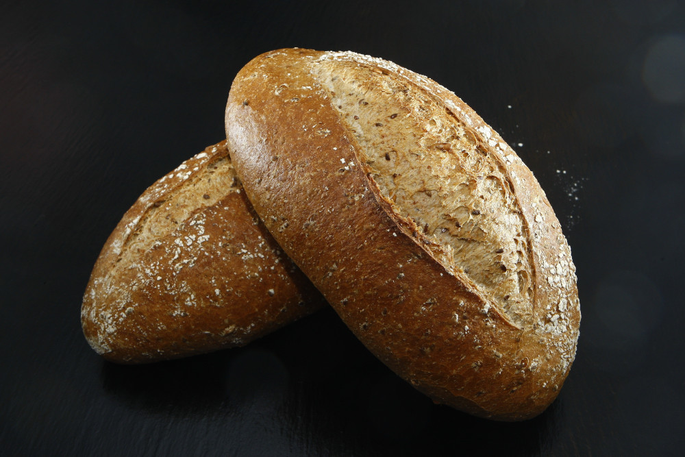

Receita de pão francês caseiro
Veja esta deliciosa receita de pão francês caseiro
Ingredientes
- 600 g de farinha peneirada
- 1 colher de sopa rasa de sal
- 1 colher de sopa rasa de açúcar
- 10 g de fermento (colher de sopa rasa) para pães granulado
- 2 colheres de manteiga ou margarina em temperatura natural
- 350 ml de água morna
Modo de preparo
- Numa tigela de vidro misture os ingredientes secos .
- Adicione a manteiga.
- Adicione a água aos poucos e vá sovando (misturando com os mãos).
- Obtenha uma bolinha.
- Forre a tigela com um filme plástico e deixe crescer de 4 a 6 horas (é o meu segredo).
- Divida a massa em bolinhas pequenas (do tamanho de um limão) e abra com um rolo de macarrão (eu utilizo uma garrafa de vinho vazia e limpa).
- Caso a massa esteja muito úmida coloque mais um pouco de farinha (o mínimo possível).
- Enrole cada rodelinha de massa como se fosse um pequeno rocambole e acomode numa forma untada com manteiga.
- Cubra com um pano molhado e deixe crescer por mais 30 minutos.
- Aqueça o forno em temperatura média (240ºC) e coloque uma caneca de alumínio cheia de água dentro do forno.
- Faça um pequeno corte sobre os pães com uma faca afiada.
- Respingue bastante água sobre os pães (até escorrer) e leve ao forno por aproximadamente 40 minutos.